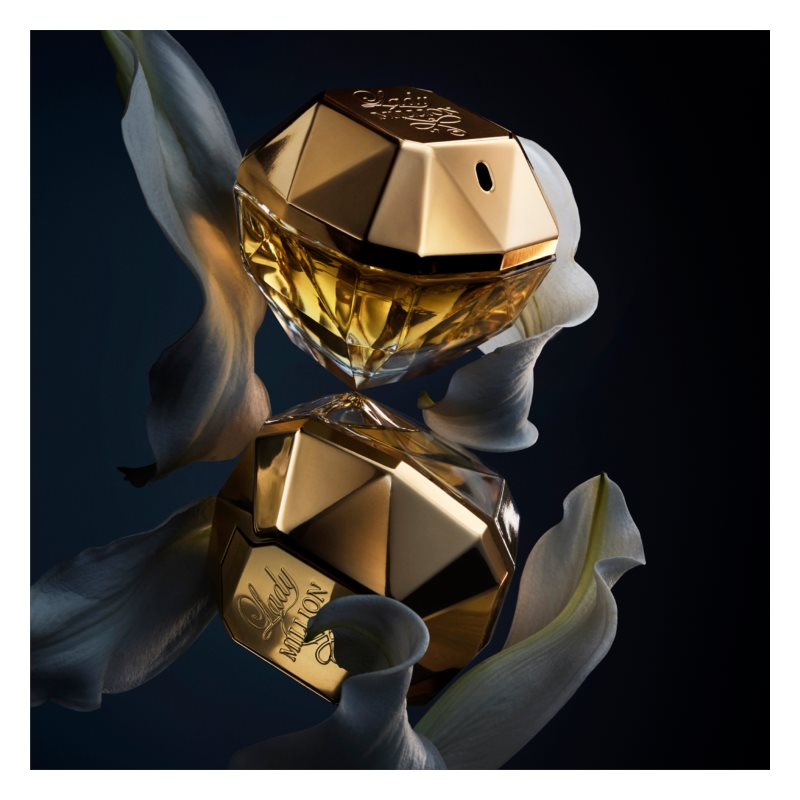

| Note de varf | EXTRAS DIN PORTOCALA AMARA, ZMEURA |
| Note de inima | JASMINE(ARAB), GARDENIE, FLOARE DE PORTOCAL AFRICAN |
| Note de baza | CIHILIMBAR, PATCHOULI, MIERE ALBA |
| Grupe de parfumuri | DE FRUCTE, FLORALE |
Apa de parfum pentru femei Lady Million a fost lansată la doi ani după versiunea pentru bărbați, Paco Rabanne 1 Million. Este inspirată, de asemenea, de aur și de bogăție, fiind creată de un cuartet de parfumieri - Anne Flipo, Béatrice Piquet, Dominique Ropion și Bruno Jovanovic. Flaconul tematic are forma unui diamant, singurul care poate „concura“ cu cărămida de aur a parfumului bărbătesc, cu care se completează, de altfel, la perfecție.
